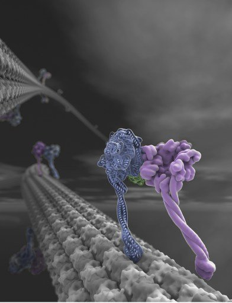
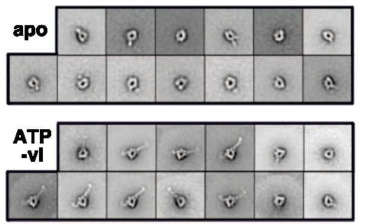

Nanometer accuracy measurements of distances between fluorophores

Ron Vale

Stefan Niekamp
Nico Stuurman, Vale lab, UCSF/HHMI
Why bother with single molecule direct distance measurements?

Direct distance measurements


Direct distance measurements
MLE - Gaussian Fit

Register

How to measure distances
$$d=\left(\dfrac{\sum_{i=1}^{n} d_i}{n}\right)$$
How to measure distances
How to measure distances
$$P_2D = \left(\dfrac{r}{σ_d^2}\right)exp\left(\dfrac{-μ^2+r^2}{ 2σ_d^2}\right)I_0\left(\dfrac{rμ}{σ_d^2}\right)$$
r (measured distance), μ (actual distance), σd (distance uncertainty),
I0 (modified Bessel function of integer order zero), Churchman et al, PNAS 102 (2005)
I0 (modified Bessel function of integer order zero), Churchman et al, PNAS 102 (2005)
|
|
P2D distance estimate fails when μ <= σd
$$P_2D = \left(\dfrac{r}{σ_d^2}\right)exp\left(\dfrac{-μ^2+r^2}{ 2σ_d^2}\right)I_0\left(\dfrac{rμ}{σ_d^2}\right)$$
 |
Use uncertainty information to improve distance estimate
$$σ_d = \sqrt{σ_{reg}^2 + σ_{loc_1}^2 + σ_{loc_2}^2 + σ_{σ_{loc_1}}^2 + σ_{σ_{loc_2}}^2} $$
$$P_2D = \left(\dfrac{r}{σ_d^2}\right)exp\left(\dfrac{-μ^2+r^2}{ 2σ_d^2}\right)I_0\left(\dfrac{rμ}{σ_d^2}\right)$$
Registration: Piece-wise affine transform


Registration: Piece-wise affine transform


Registration: TetraSpeck bead color centers are offset

Validation: Kinesin bound to microtubules
 |
 |
Multiple observations
Treat as individual observations, or first average positions (Vector)
Multiple observations
Treat as individual observations, or first average positions (Vector)
Multiple observations
Treat as individual observations, or first average positions (Vector)
Multiple observations
Treat as individual observations, or first average positions (Vector)
$$σ_d = \sqrt{σ_{reg}^2 + σ_{loc_1}^2 + σ_{loc_2}^2+ σ_{σ_{loc_1}}^2 + σ_{σ_{loc_2}}^2 + \color{red}{σ_{sample}^2 }} $$
Comparing Vector-P2D and Sigma-P2D can uncover sample heterogeneity
Validation using DNA origamis

How does dynein transduce ATP hydrolysis into motion?

Graham Johnson (valelab.ucsf.edu)

Dynein stalk conformation depends on nucleotide state

Method and code availability
Micro-Manager "Localization Microscopy" plugin
(https://micro-manager.org, download 2.0-gamma)
Methods: doi: 10.1073/pnas.1815826116